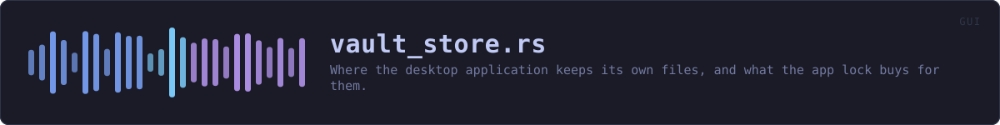

crates/veilvoice-gui/src/vault_store.rs
veilvoice-gui · 807 lines · read the source here · or on GitHub
Where the desktop application keeps its own files, and what the app lock buys for them.
The short version, and it is the honest one
With an app lock set, everything VeilVoice writes about itself lives in veilvoice_crypto::hoard: encrypted, padded to a few fixed sizes, under filenames derived from the lock passphrase, with decoy files sown among them. Somebody who opens the folder without the passphrase cannot tell which file is the settings, which is the integrity record, which holds anything, and which is junk.
With no app lock, none of that is possible and none of it is claimed. There is no passphrase, so there is no key, so there is nothing to derive a name from or encrypt with. The files sit in the open under their own names, exactly as they did before this module existed, and the security tab says so in those words.
That is the whole bargain, and it is the answer to a fair question about the app lock: what is it actually for, if it is only a password prompt on a window whose files anybody can read? This is what it is for. Setting a passphrase is what turns the folder from a set of labelled files into a set of indistinguishable ones.
What it still does not buy
Repeated here rather than left in the crypto crate, because this is the module the application calls and the place somebody looks:
- It does not hide that VeilVoice is installed. The folder is named
veilvoiceand the lock file is in it under its own name -- it has to be, since it is what checks the passphrase. - It does not stop anybody deleting the folder.
- It is no protection at all while the application is open and unlocked.
- Anybody who has the passphrase has everything.
Moving in, and the risk that comes with it
The first unlock after a lock is set migrates the existing plain files in: each is read, written as a hoard record, and the original securely erased.
This is the moment to be plain about a consequence that is easy to under-state. Once the files are in the hoard, the passphrase is the only way back to them. Losing it does not lock you out of a window whose files you could still read by hand; it loses the settings, the integrity record and the policies for good. veilvoice_crypto::lock keeps a second copy of the lock for exactly this reason, and the setup screen says the sentence out loud rather than burying it.
WHAT THIS FILE CONTAINS
807 lines defining 15 functions (13 public), 2 types and 1 constant. Everything below is read out of the source, so it cannot disagree with the code.
The types it owns.
struct VaultStoreline 125 · The application's own storage, locked or not.struct Measuredline 658 · What the application measured about its own running, kept between sessions.
What happens when it runs. These are the ways in: public, and nothing else in this file calls them, so they are what an outside caller reaches first.
VaultStore::newline 143 · Point at the program folder.VaultStore::dirline 152 · The program folder, if this platform has one.VaultStore::is_obfuscatedline 161 · Whether records are currently obfuscated.VaultStore::start_unlockingline 176 · Take the key from an unlock and start opening the hoard with it.
reachesopen_withVaultStore::is_openingline 195 · Whether an unlock is still being carried out.VaultStore::pollline 203 · Collect a finished unlock, installing the key.VaultStore::unlockedline 235 · Open the hoard here and now, for tests only.
reachesopen_withVaultStore::lockedline 252 · Forget the key.VaultStore::readline 259 · Read a record, from the hoard if it is open and from the plain file if it is not.
reachesplain_pathVaultStore::writeline 274 · Write a record, obfuscated if there is a key and plain if there is not.
reachesplain_pathMeasured::loadline 675 · Read it back, or the defaults if nothing has been recorded.Measured::saveline 698 · Write it, obfuscated when there is a key and plain when there is not.Measured::recordline 712 · Fold this session's numbers in.
WHAT CALLS WHAT
The functions this file defines, and the calls between them. An edge means the callee's name appears, called, inside the caller's body. This is a syntactic reading, not a type-resolved one.
The same graph as Mermaid source
%%{init: {"theme":"base","themeVariables":{"background":"#1a1b26","primaryColor":"#1f2335","primaryTextColor":"#c0caf5","primaryBorderColor":"#7aa2f7","secondaryColor":"#16161e","tertiaryColor":"#16161e","lineColor":"#737aa2","textColor":"#c0caf5","mainBkg":"#1f2335","nodeBorder":"#7aa2f7","clusterBkg":"#16161e","clusterBorder":"#2f3549","fontFamily":"ui-monospace, SFMono-Regular, Consolas, monospace","fontSize":"14px"}}}%%
flowchart TD
n_new(["VaultStore::new<br/>line 143"])
n_dir(["VaultStore::dir<br/>line 152"])
n_is_obfuscated(["VaultStore::is_obfuscated<br/>line 161"])
n_start_unlocking(["VaultStore::start_unlocking<br/>line 176"])
n_is_opening(["VaultStore::is_opening<br/>line 195"])
n_poll(["VaultStore::poll<br/>line 203"])
n_unlocked(["VaultStore::unlocked<br/>line 235"])
n_locked(["VaultStore::locked<br/>line 252"])
n_read(["VaultStore::read<br/>line 259"])
n_write(["VaultStore::write<br/>line 274"])
n_plain_path["VaultStore::plain_path<br/>line 288"]
n_open_with["open_with<br/>line 316"]
n_load(["Measured::load<br/>line 675"])
n_save(["Measured::save<br/>line 698"])
n_record(["Measured::record<br/>line 712"])
n_read --> n_plain_path
n_start_unlocking --> n_open_with
n_unlocked --> n_open_with
n_write --> n_plain_path
click n_new href "https://github.com/tilas01/veilvoice/blob/main/crates/veilvoice-gui/src/vault_store.rs#L143" "open the source"
click n_dir href "https://github.com/tilas01/veilvoice/blob/main/crates/veilvoice-gui/src/vault_store.rs#L152" "open the source"
click n_is_obfuscated href "https://github.com/tilas01/veilvoice/blob/main/crates/veilvoice-gui/src/vault_store.rs#L161" "open the source"
click n_start_unlocking href "https://github.com/tilas01/veilvoice/blob/main/crates/veilvoice-gui/src/vault_store.rs#L176" "open the source"
click n_is_opening href "https://github.com/tilas01/veilvoice/blob/main/crates/veilvoice-gui/src/vault_store.rs#L195" "open the source"
click n_poll href "https://github.com/tilas01/veilvoice/blob/main/crates/veilvoice-gui/src/vault_store.rs#L203" "open the source"
click n_unlocked href "https://github.com/tilas01/veilvoice/blob/main/crates/veilvoice-gui/src/vault_store.rs#L235" "open the source"
click n_locked href "https://github.com/tilas01/veilvoice/blob/main/crates/veilvoice-gui/src/vault_store.rs#L252" "open the source"
click n_read href "https://github.com/tilas01/veilvoice/blob/main/crates/veilvoice-gui/src/vault_store.rs#L259" "open the source"
click n_write href "https://github.com/tilas01/veilvoice/blob/main/crates/veilvoice-gui/src/vault_store.rs#L274" "open the source"
click n_plain_path href "https://github.com/tilas01/veilvoice/blob/main/crates/veilvoice-gui/src/vault_store.rs#L288" "open the source"
click n_open_with href "https://github.com/tilas01/veilvoice/blob/main/crates/veilvoice-gui/src/vault_store.rs#L316" "open the source"
click n_load href "https://github.com/tilas01/veilvoice/blob/main/crates/veilvoice-gui/src/vault_store.rs#L675" "open the source"
click n_save href "https://github.com/tilas01/veilvoice/blob/main/crates/veilvoice-gui/src/vault_store.rs#L698" "open the source"
click n_record href "https://github.com/tilas01/veilvoice/blob/main/crates/veilvoice-gui/src/vault_store.rs#L712" "open the source"
classDef entry fill:#1f2335,stroke:#7aa2f7,color:#c0caf5
class n_new,n_dir,n_is_obfuscated,n_start_unlocking,n_is_opening,n_poll,n_unlocked,n_locked,n_read,n_write,n_load,n_save,n_record entry
classDef helper fill:#1f2335,stroke:#bb9af7,color:#c0caf5
class n_plain_path,n_open_with helperThis site loads no third-party script, so it cannot run Mermaid; the diagram above is the same nodes and edges drawn by the generator instead. GitHub renders the source below directly.
ITEMS
| Item | Line | Documentation |
|---|---|---|
records pub mod | 86 | The logical names of every record the application keeps. |
DECOYS const | 121 | How many decoys a folder is kept stocked with. |
VaultStore pub struct | 125 | The application's own storage, locked or not. |
VaultStore::new pub fn | 143 | Point at the program folder. |
VaultStore::dir pub fn | 152 | The program folder, if this platform has one. |
VaultStore::is_obfuscated pub fn | 161 | Whether records are currently obfuscated. |
VaultStore::start_unlocking pub fn | 176 | Take the key from an unlock and start opening the hoard with it. |
VaultStore::is_opening pub fn | 195 | Whether an unlock is still being carried out. |
VaultStore::poll pub fn | 203 | Collect a finished unlock, installing the key. |
VaultStore::unlocked pub fn | 235 | Open the hoard here and now, for tests only. |
VaultStore::locked pub fn | 252 | Forget the key. |
VaultStore::read pub fn | 259 | Read a record, from the hoard if it is open and from the plain file if it is not. |
VaultStore::write pub fn | 274 | Write a record, obfuscated if there is a key and plain if there is not. |
VaultStore::plain_path fn | 288 | Where a record sits when nothing is obfuscating it. |
open_with fn | 316 | Open the hoard in dir with key, migrating and auditing. |
Measured pub struct | 658 | What the application measured about its own running, kept between sessions. |
Measured::load pub fn | 675 | Read it back, or the defaults if nothing has been recorded. |
Measured::save pub fn | 698 | Write it, obfuscated when there is a key and plain when there is not. |
Measured::record pub fn | 712 | Fold this session's numbers in. |
measured_tests mod | 723 |